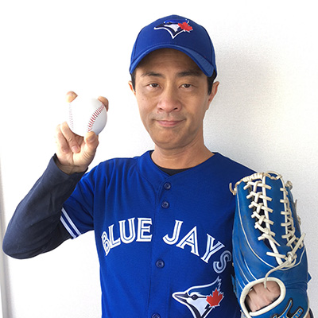

Speakers
#a11yTOConf is thrilled to announce our first round of world renowned speakers. We’re not done yet, stay tuned for the next batch of speakers soon!
Hosted by:
Léonie Watson
Léonie began using the internet in 1993, turned it into a career in 1997, and (despite losing her eyesight along the way), she’s been enjoying herself thoroughly ever since.
Léonie is Director of Developer Communications at The Paciello Group (TPG), and a member of the W3C Advisory Board. She is also co-chair of the W3C Web Platform Working Group, where she is responsible for many specifications including IndexedDB, Push API, Pointer Lock API, Gamepad API, ARIA in HTML, and the HTML Accessibility API Mapppings (AAM).
Léonie contributes to projects like the Inclusive Design Principles, and co-organises the Inclusive Design 24 #ID24 conference with friends from TPG. She is a mentor for young people learning programming with Microsoft’s Project Torino, and was technical editor for Laura Kalbag’s book Accessibility For Everyone.
Léonie is often found at conferences, talking about web standards, accessibility mechanics, and pushing the boundaries of inclusive design (with existing technologies like SVG, HTML, ARIA, and JavaScript, as well as new technologies like AI and WebVR). She has also written about these things for Smashing magazine, SitePoint.com, and Net magazine, as well as on her own site Tink.UK.
In her spare time, Léonie likes reading, cooking, drinking tequila, and dancing (although not necessarily in that order)!
Makoto Ueki
Web Accessibility Consultant in Japan. Makoto has been contributing to the JIS (Japanese Industrial Standard) Working Group and W3C WCAG Working Group as a web accessibility expert. And he has been a chairman of the Web accessibility Committee in Japan (WAIC) since 2012.
Speakers:
Rob Dodson

Rob Dodson is a developer advocate at Google where he focuses on accessibility and web components. His mission is to fight for a better web and to help developers build great experiences. You can catch him every other week on his YouTube series A11ycasts.
Jesse Beach
Jesse Beach's technology career started in linguistic research, shifted to UX design and then landed solidly in front end development. At Facebook she channels her energies into building tools and components that support accessible interface development. She believes that all humans should have access to information and services, whatever their abilities or circumstances.
Steve Faulkner
Steve is the Technical Director at TPG. He joined The Paciello Group in 2006 and was previously a Senior Web Accessibility Consultant at Vision Australia. Steve is a member of several groups, including the W3C Web Platforms Working Group and the W3C ARIA Working Group. He is an editor of several specifications at the W3C including ARIA in HTML, Using ARIA. He also develops and maintains HTML5accessibility and the JAWS bug tracker/standards support.
Siri Betts-Sonstegard
Siri Betts-Sonstegard is a Design Researcher & Service Designer currently working on developing innovative cognitive tools for clinicians at IBM Watson Health. Before joining IBM, she worked as part of the Design Innovation Group (DIG) at Memorial Sloan-Kettering Cancer Center, where she focused on understanding patient needs through human-centered design methods and approaches to develop new digital products and services. Additionally, Siri teaches Disruptive Design as part of the MFA Design for Social Innovation at the School of Visual Arts.
Heydon Pickering

Heydon is a design consultant focused on accessibility and design systems. He has worked with The Paciello Group, The BBC, and the green energy company, Bulb. He authored the book Inclusive Design Patterns and writes about coding accessible components at inclusive-components.design. He's interested in the mathematics of sound and typography.
Cordelia Dillon
Cordelia McGee-Tubb is a lead accessibility engineer at Salesforce and a technology tutor at her local senior center. When not digging through the DOM or chatting about inclusive design patterns, she can often be found drawing comics, circumambulating cities, and/or scouring the internet for silly hats.
John Foliot
John Foliot is an internationally recognized Web Accessibility Specialist and vocal champion for the cause of web standards and universal accessibility. He has provided consultation services and related training to government agencies, educational institutions and private sector companies since 1999. His wealth of Digital Accessibility experience and insight enables him to provide stakeholders with applicable and accessible strategies and solutions to everyday challenges in website deployment, as well as addressing the greater needs of establishing and implementing cultural change within large organizations.
John is currently a Principal Accessibility Strategist at Deque Systems Inc., where he works with their clients toward establishing effective Accessibility Programs, training, and content creation practices. He is an active Contributor at the W3C in the areas of HTML5, WCAG 2.1 (and related topics), Personalization and Cognition, Accessible Platform Architecture WG, Media/Timed-Text and related topics, and was an invited speaker at the W3C Television on the Web Interest Group. Previously working within the W3C HTML5 Accessibility Task Force, John was co-facilitator of the Media Sub Group, and has contributed directly to the HTML5 Standard at the W3C.
Tara Voelker
Tara has a background as AAA industry vet, working on titles such as Red Faction: Guerrilla, Bioshock Infinite and Evolve. She is also a passionate accessibility advocate, having previously served as the IGDA Game Accessibility chairperson and is currently the Co-Director of GAConf, a conference dedicated to game accessibility.
Today, Tara is a Program Manager at Mixer, wrangling new features as well as heading up their accessibility efforts. She’s also Gaming and Disability Community Lead at Xbox as part of the Gaming for Everyone program. Jenny Lay-Flurrie, Chief Accessibility Officer at Microsoft, once called her Xbox royalty, and she’s been pretty obnoxious ever since.
David Lepofsky
David Lepofsky is a visiting professor (part-time) at the Osgoode Hall Law School and an adjunct member of the University of Toronto Faculty of Law. He is chair of the Accessibility for Ontarians with Disabilities Act Alliance. He is a member and past chair of the Toronto District School Board’s Special Education Advisory Committee. And since the late 1970s, he has been active in a volunteer capacity, advocating for new laws to protect the rights of persons with disabilities in Canada.
Ian Hamilton
Ian has a 10 year background in game accessibility, initially across a wide range of products at the BBC, including making games accessible for preschool children with profound motor and cognitive impairment. He now works independently throughout the wider industry, collaborating with developers, publishers, manufacturers, academia and industry bodies. Pursuing avenues to raise the profile and understanding of accessibility across the industry, such as consulting directly on individual games and features, speaking, teaching, training, organising awareness raising events, leading work on internal and industry best practices, and advising on strategy and and government funding processes.
Partners & Sponsorships
Diamond Sponsor

Gold Sponsors
Silver Sponsors

Bronze Sponsors


Supporting Sponsors

If you are interested in sponsoring #a11yTOConf, please email us at sponsor@a11yto.com